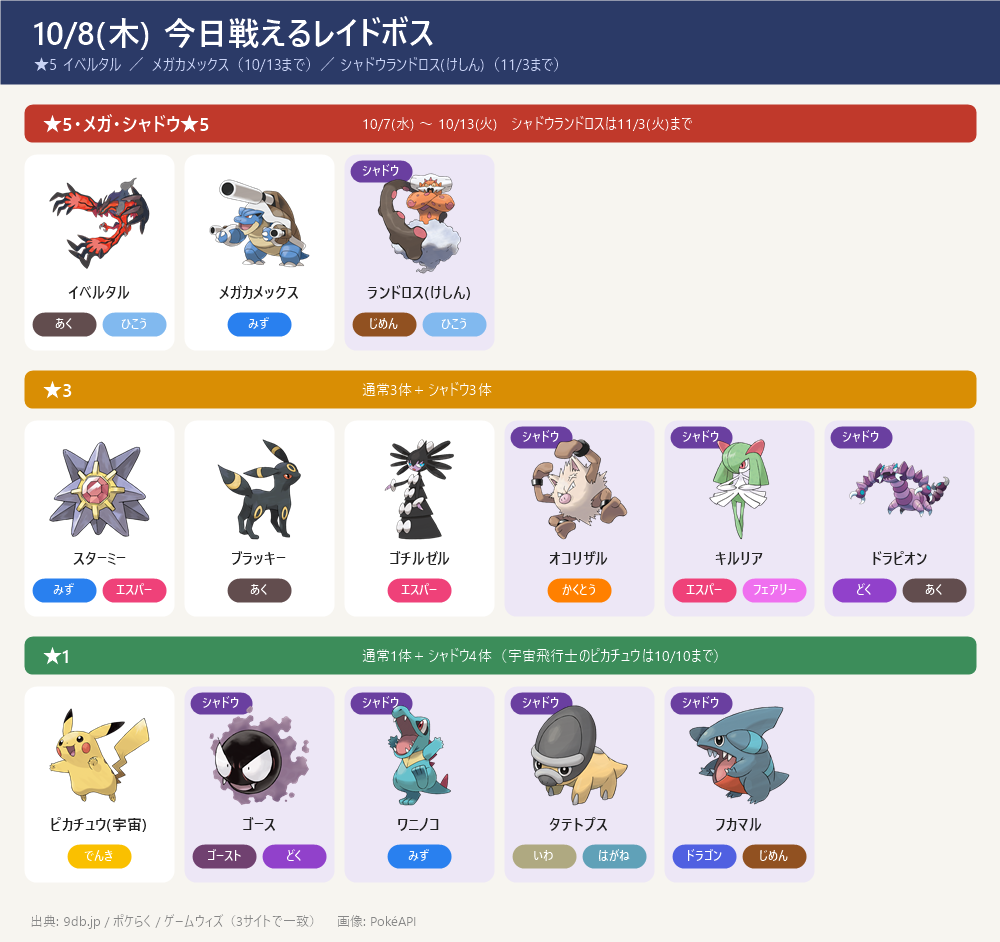
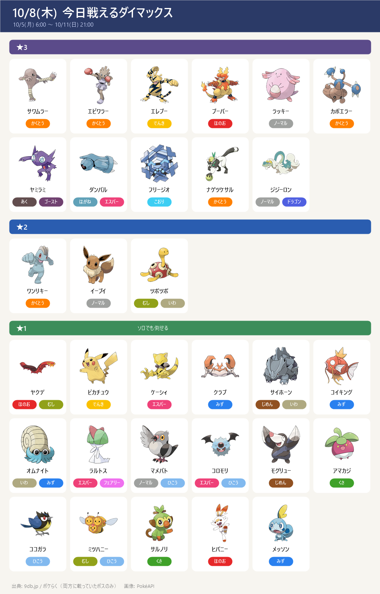
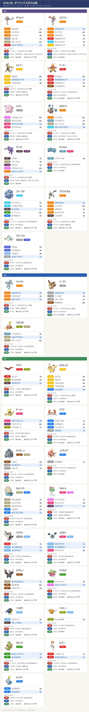
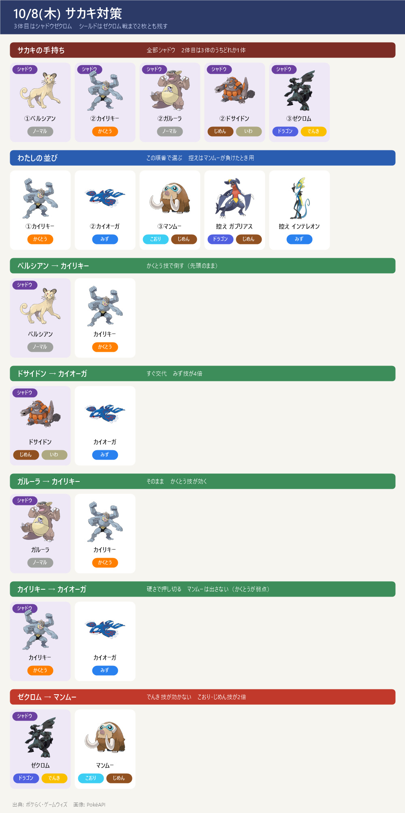

今日のポイント
- 今日 18:00～19:00 スポットライトアワー：リグレー（捕まえるとアメ2倍）
- レイドは昨日と同じ顔ぶれ
- ★5 イベルタル（あく・ひこう → でんき・こおり・いわ・フェアリー技）／ メガカメックス（みず → でんき・くさ技）は 10/13(火) まで
- シャドウランドロス(けしん)（じめん・ひこう → こおり技が4倍）は 11/3(火) まで
- 10/10(土) 14:00～17:00 コミュニティデイ：ゾロア ／ 世界宇宙週間も10/10まで（★1レイドの宇宙飛行士のピカチュウ）
- 東京の巣は今日から新しい期間（9db では 9:00 に入れ替わり）。報告が集まってから巣ページを作る
- サカキに挑戦中ならレーダーを道具から起動（相手はシャドウゼクロム → こおり・じめん・ドラゴン・フェアリー技）
- GOパス：10月は 11/3(火) 10:00 まで（1日の上限250pt）
今日戦えるレイドボス
★5 イベルタル ／ メガカメックス（10/13まで）／ シャドウランドロス(けしん)（11/3まで）

今日戦えるダイマックス
10/5(月) 6:00 ～ 10/11(日) 21:00
- ※★3・★2は先週と同じ顔ぶれ。★1にヤクデ（10/5のマックスマンデー）が加わった。ここに載せたのは2サイトで一致したボスだけ。9db.jp には ★1 にほかにも多数、★2 にホエルコ・ヒンバス・ダルマッカ、★3 にモノズ・タイレーツも載っている
- 【各ボスのスペシャルアタック候補】（下のカード。数字はレイド・マックスバトルでの威力。★＝ボスが使ってくると楽な、いちばん弱い技（ボスと同じタイプの技は1.2倍で計算。こちらのポケモンとの相性は見ていない）。戦闘中に技名が出たら受け役を合わせる）


サカキ対策（シャドウゼクロム）

- サカキの手持ち（10/2〜）：①ペルシアン（ノーマル）→ ②カイリキー／ガルーラ／ドサイドンのどれか → ③シャドウゼクロム（ドラゴン・でんき）
- ゼクロムの弱点：じめん・こおり・ドラゴン・フェアリー。じめんタイプは、でんき技が効かないので特に安定
- 並び（この順番）：①カイリキー → ②カイオーガ → ③マンムー（控え：ガブリアス）
- ペルシアン → カイリキーのかくとう技で倒す
- 2体目がドサイドン → すぐカイオーガに交代（みず技が4倍）
- 2体目がガルーラ → カイリキーのまま
- 2体目がカイリキー → カイオーガで受けて倒す（マンムーはかくとうが弱点なので出さない）
- ゼクロム → マンムー（でんき技が効かない・こおりもじめんも2倍）。ガブリアスはドラゴン技を2倍で受けるので控え
- シールド：2枚ともゼクロム戦まで残す。サカキも2枚持っているので、最初は早く撃てるゲージ技でシールドを使わせる
- 理想の技：マンムー＝こなゆき／ゆきなだれ・10まんばりき カイリキー＝カウンター／ばくれつパンチ・クロスチョップ カイオーガ＝たきのぼり／なみのり・ハイドロポンプ ガブリアス＝マッドショット／じしん
- 再戦：同じ場所のサカキなら、負けても手持ち（2体目・技）は変わらない。負けたら2体目を見て組み直して何度でも挑める（レーダーは消えない）。別の場所のサカキだと変わることがある
- 2個目のレーダー：GOパス収穫祭デラックスのランク報酬だった（受け取りは 10/7(水) 20:00 で終了）
この先の予定
- 10/8(木) 18:00～19:00 スポットライトアワー：リグレー（アメ2倍）
- 10/10(土) 14:00～17:00 コミュニティデイ：ゾロア ／ 世界宇宙週間 終了
- 10/11(日) 21:00 マックスバトルのボス入れ替わり
- 10/12(月) マックスマンデー：ココガラ（時刻はサイトで違う → 下記）
- 10/13(火) おひろめデイ 10:00～20:00 ／ 秋の遠足：相棒といっしょ 10:00～10/19(月)
- 10/13(火) イベルタル・メガカメックスのレイド終了
- 10/14(水) ～ ★5 ディアルガ ／ メガカイリュー（10/20(火)まで）
- 10/14(水) 18:00～19:00 レイドアワー：ディアルガ
- 10/15(木) 18:00～19:00 スポットライトアワー：ヌイコグマ（送るとアメ2倍）
- 10/19(月) マックスマンデー：ニューラ（時刻はサイトで違う → 下記）
サイトで違っていた点
- ★3・★1 の終了日は 9db のレイド日程だけに「10/10(土) 21:00」とある → 参考まで
- 東京の巣の入れ替わり（10/8 9:00、次は 10/22 9:00）は 9db のみ
- マックスマンデーの時刻: 9db は 6:00～21:00、攻略大百科は 18:00～19:00（ココガラ・ニューラとも）→ ゲーム内で確認を
- メガカイリューの開始・終了時刻: 9db は 10/14 5:00～10/20 21:00、攻略大百科は 6:00～20:30
- 攻略大百科のみ: 10/17(土) メグロコふかの日、10/21(水) レイドアワー パルキア、10/21(水)～ メガリザードンX・Y、10/22(木) スポットライトアワー ネマシュ → 参考まで
- ダイマックスボスの技候補はゲームデータ(PvPoke)から（おんがえし・やつあたりは除外）、威力は pogoapi.net
出典: 9db.jp/pokemongo（開催イベント一覧・レイド日程・マックスバトル日程）／pokemon.gamepedia.jp/go（攻略大百科 今月のイベント）／pokemongo-raku.com（レイドボス一覧・マックスバトル）／pokemongo.gamewith.jp（レイドボス）／pvpoke.com ゲームデータ（技候補）
画像: PokéAPI ／ 2サイト以上で一致した情報だけを載せています